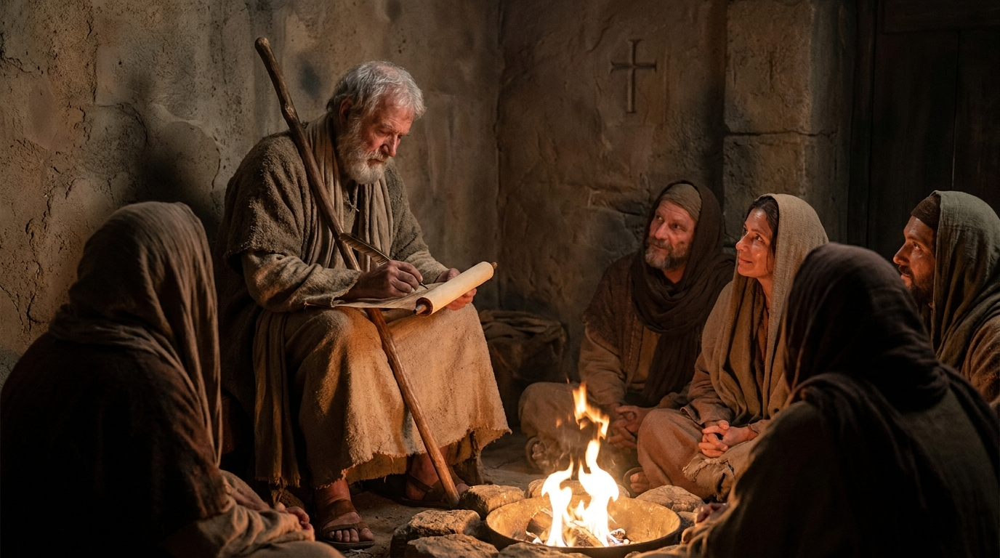

Esperança em Meio ao Sofrimento
A Primeira Carta de Pedro foi escrita pelo apóstolo pescador para cristãos dispersos pela Ásia Menor, que estavam enfrentando hostilidade, perseguições e marginalização devido à sua fé. Pedro os encoraja lembrando-os de sua nova e gloriosa identidade como "povo escolhido e nação santa". Ele ensina que o sofrimento por causa de Cristo não é um acidente, mas uma oportunidade de participar dos sofrimentos do próprio Senhor, tendo a fé refinada como o ouro no fogo. A carta é uma poderosa mensagem focada na esperança viva e instrui os crentes a manterem uma conduta santa e exemplar, mesmo vivendo em uma sociedade hostil.
Ficha Técnica
- Autor: O apóstolo Pedro.
- Tema Principal: A esperança viva, a santidade, a nova identidade do cristão e a perseverança durante a perseguição.
- Versículo-Chave: "Bendito seja o Deus e Pai de nosso Senhor Jesus Cristo! Conforme a sua grande misericórdia, ele nos regenerou para uma esperança viva, por meio da ressurreição de Jesus Cristo dentre os mortos." (1 Pedro 1:3)
Estrutura
- A salvação maravilhosa, a esperança viva e o chamado à santidade (Cap. 1)
- A identidade da Igreja (sacerdócio real) e a submissão às autoridades (Cap. 2)
- Deveres no casamento e a resposta correta diante do sofrimento injusto (Cap. 3)
- O estilo de vida nos últimos dias e a alegria em sofrer por Cristo (Cap. 4)
- Conselhos aos líderes (presbíteros), exortação à humildade e resistência ao diabo (Cap. 5)